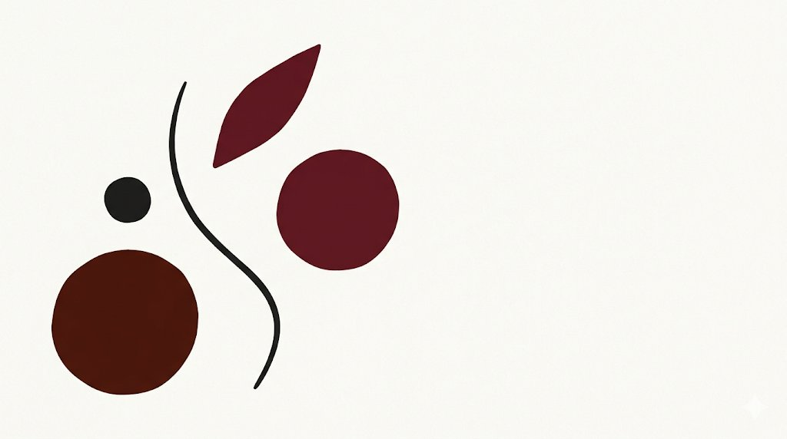

11,4
Резюме на вакансию
Исторический максимум hh-индекса, март 2026. За полтора года — трёхкратный рост.
hh.ru Research
Стандартные инструменты отбора утратили предиктивную способность. Мы проектируем новые под задачи и ценности работодателя.

Каждые несколько лет рынок труда проходит точку перелома. Не постепенное изменение, а качественный сдвиг, после которого старые инструменты перестают работать.
Мы находимся именно в такой точке. Рынок кандидата сменился рынком работодателя. Резюме и вакансии идеализируют стороны, а вопросы и ответы на собеседованиях пишут языковые модели с обеих сторон. Инструменты рекрутинга перестали отличать одного кандидата от другого — и сам процесс отбора потерял структуру.
Новые стандарты оценки формируются прямо сейчас — в практике команд, которые работают с этой задачей. Мы из их числа.
Исторический максимум hh-индекса, март 2026. За полтора года — трёхкратный рост.
Срок запуска и стабилизации HR-системы в крупной компании. К моменту внедрения рынок уже другой.
Доля российских компаний с зрелой автоматизацией HR. У 42% основные процессы до сих пор выполняются вручную.